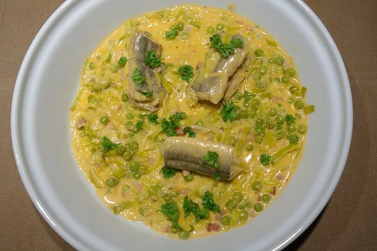

Aal Helgoländer Art

Zutaten für 4 Portionen:
- 100 g Speck, durchwachsen
- 30 g Butter
- 1 Stange/n Lauch
- 250 g Champignons
- 150 g Erbsen, TK
- Salz und Pfeffer
- 1 EL Tomatenmark
- 2 EL Weizenmehl
- 125 ml Fischfond
- 250 ml Sahne
- 600 g Aal(e), küchenfertig
- 2 EL Zitronensaft
- 1 EL Petersilie, gehackt
Zubereitung
|
|
Arbeitszeit ca. 10 Minuten |
|
|
Koch-/Backzeit ca. 40 Minuten |
|
|
Gesamtzeit ca. 50 Minuten |
- Speck in Würfel schneiden und mit der Butter zerlassen.
- Erbsen zufügen und ca. 2 - 3 Minuten unter Rühren erhitzen.
- Lauch in Ringe schneiden und zugeben.
- Alles nochmal 3 - 4 Minuten dünsten.
- Mit Salz und Pfeffer kräftig würzen.
- Tomatenmark und Mehl unterrühren und mit Fischfond und Sahne auffüllen.
- Ca 5 Minuten kochen lassen.
- Den Aal in ca 2 - 3 Stücke schneiden, mit Salz und Pfeffer und Zitronensaft würzen.
- Auf das Gemüse legen und mit geschlossenem Deckel bei geringer Hitze ca 10 Minuten ziehen lassen.
- Zum Schluss mit Petersilie bestreuen.
- Als Beilage Baguette oder Bratkartoffeln dazugeben.